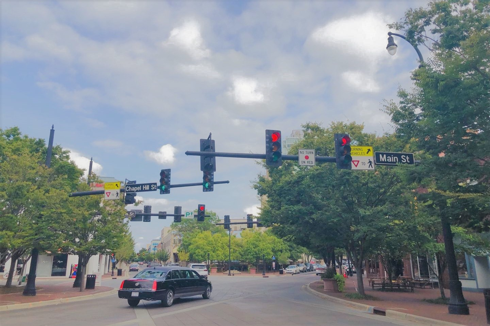
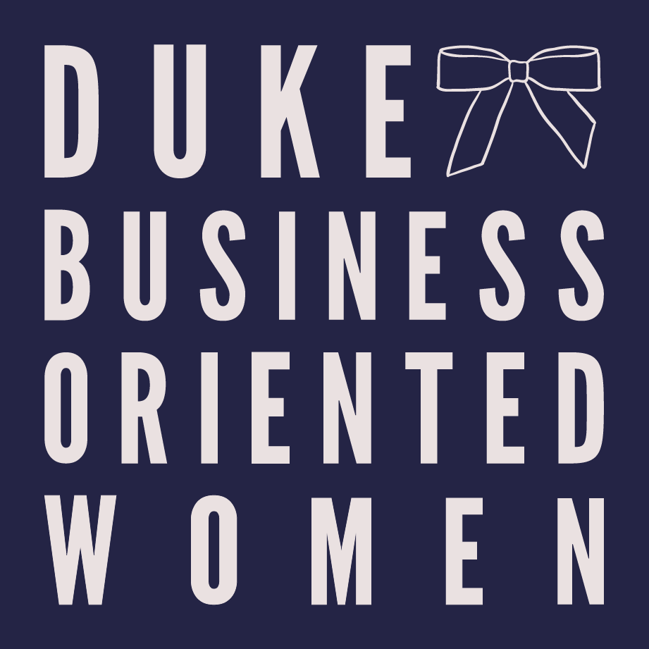
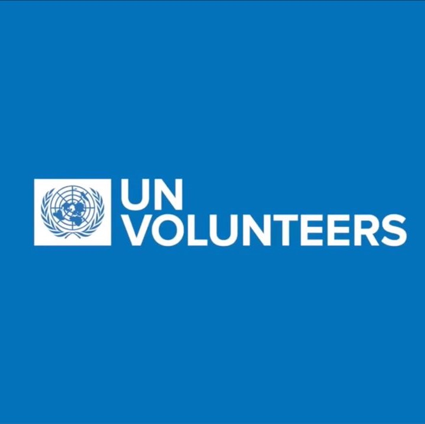
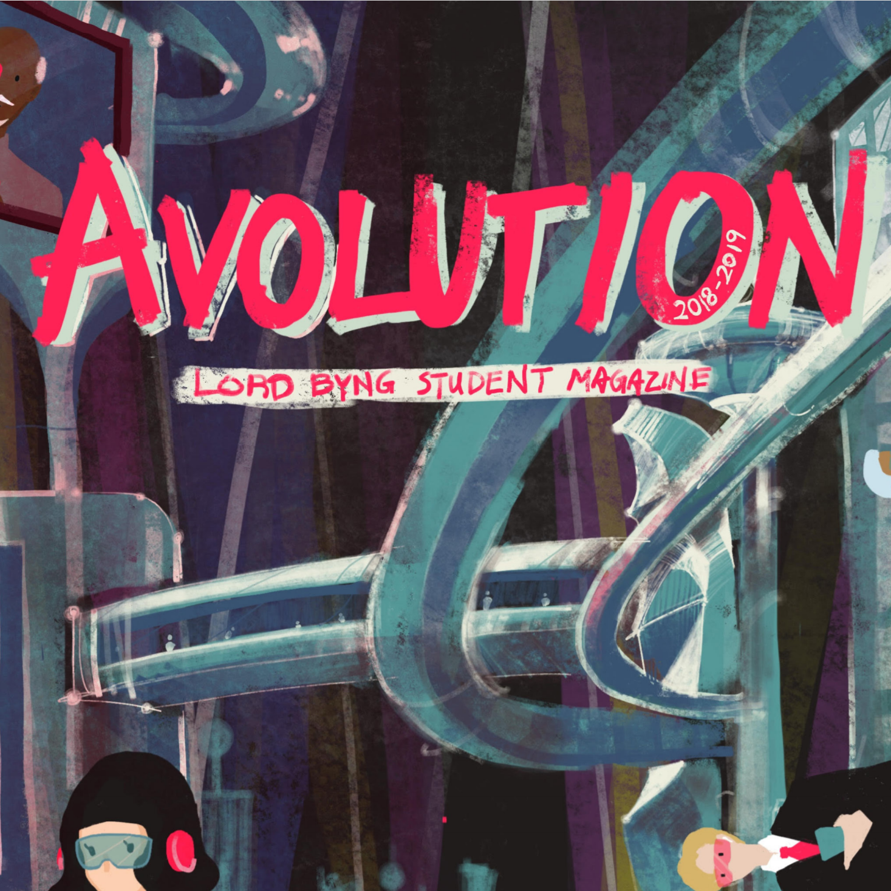
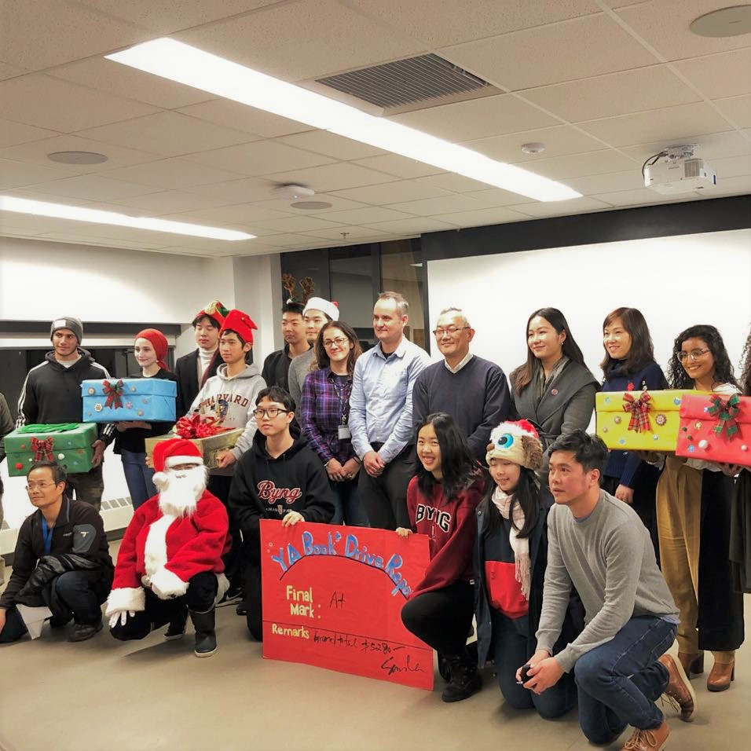
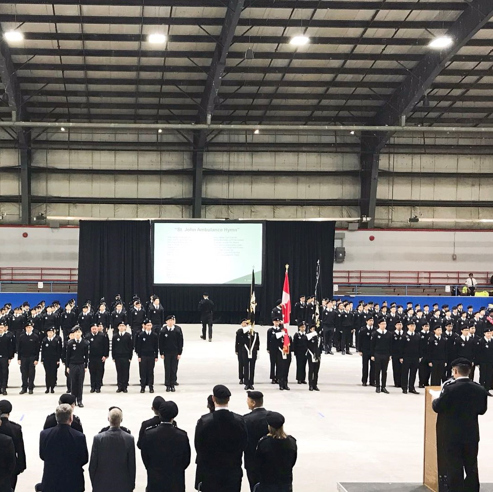

BOW is a selective student organization that prepares female students for careers in business. I joined as a general body member in freshman spring and was later promoted to the Professional Development Committee, which organizes workshops for members to learn useful hard skills, ranging from public speaking to design.
Hi, I'm
Iris Liang
Welcome to my website!
About Me
interdisciplinary learner, innovative problem solver, people-oriented introvert
also an economics & psychology sophomore at Duke University
My Home
x 3



Durham, North Carolina, USA
A southeastern city known for tobacco, tech, and Duke, Durham turned out to be much more vibrant than I had expected. I enjoyed living in the vast forest that Duke is built in and exploring the rest of the city in my free time. My only source of complaint is the weather. The morning can be cold enough for a thick sweater and by lunchtime, it has become warm enough for just a T-shirt. On the bright side, this helped me develop a habit of checking the weather forecast first thing in the morning.
My Experiences

Business Oriented Women (BOW)
Professional Development Committee Member
KSAC actively fosters communication and promotes cross-cultural dialogue between Duke and Duke Kunshan, a joint venture university in China. Specifically, the publicity team is responsible for marketing content creation and social media promotion. I became proficient in using Canva through this experience.

Wanting to continue working in media, I joined the student-run newspaper in freshman fall as a contributing reporter and wrote articles on student life, major events, as well as controversies on campus. Please click on the image above to read my front-page article on controversy surrounding parking policies at Duke.

I rushed for this SLG in freshman spring since the community is so diverse and supportive. I also wanted to experience the rush process and expand my social circle. I especially like how I can learn new languages and hear different cultural experiences through interacting with other members here.

As an international student who has never lived in the US before, I wanted to connect with local families and joined the Supper Club in freshman spring. Each month, we shared a meal with our hosts in their home. It was an amazing cross-cultural experience. I enjoyed getting to know the hosts and am still in touch with them.

Accredited by Clubhouse International, Hope Clubhouse is a NPO seeking to end social and economic isolation for 194 mental illness patients in Chengdu, China. I lead employment preparation workshops virtually, collect qualitative data, and suggest areas of mutual learning for Clubhouses in China, Canada, and the US.

United Nations Volunteer
Deputy Leader for COVID-19 Response Project
Through this UN virtual volunteering program, I joined Social Development International in creating a COVID-19 support center in Cameroon. Leading a 30-person marketing team, I design educational brochures and spearhead social media fundraising on Facebook, Instagram, LinkedIn, Twitter, and YouTube.

I worked virtually with the marketing team of a company in Shanghai for three months, increasing the readership of its social media content by four times. I also became proficient in using social media tools such as Xiumi (graphic design software), Adobe Premiere Pro, and ArcTime (subtitle-making software).

For my first job in college, I took detailed class notes for disabled students in four of my classes (gender studies seminar, abnormal psychology, social psychology, first-year writing class on archeology) throughout freshman year. This experience helped me become more adept in quickly capturing and organizing main ideas.

This was my first long-term job! I started out as a kitchen cook in tenth grade and worked until graduation. After also working as a cashier and a beverage specialist, I became promoted to Crew Trainer. I learned how to train new employees, assess their performance, and resolve customer complaints efficiently.

I applied to this social sciences project in the summer following freshman year since I wanted to gain experience in research. Aiming to explore associations between the prevalence of tactical stores and the socio-demographics of the region, I helped political science faculty in collecting, organizing, and analyzing data using Excel.

This project focused on courageous behavior in the workplace during the pandemic. Led by a Management & Organization professor, the research team analyzes and codes qualitative data from a large sample of participants. I gained more research experience and also learned about different courage types.

Avolution Magazine
Co-Chief Editior
I joined Avolution in ninth grade since I had always been passionate about writing. I also became a designer after learning how to use Adobe InDesign on my own. In eleventh grade, I became a chief editor. Overseeing the visual and written content, my partner and I doubled production to 1200 copies per volume.

Vancouver School Board - Project 3B
President
Project 3B is the largest club in my high school and aims to connect newcomers with local students. I joined in eighth and became President in twelfth grade. Managing a 15-person executive board, I organized events, including a book drive that raised 1200 for refugee children and a Lantern Fest with 350 attendees.

St. John Ambulance
First-Aid Cadet & Cadet Council Secretary
A Sea Cadet for 2 years, I later joined St. John and enjoyed learning first-aid. I was certified as an Advanced Medical First Responder and received first place three times in the annual first-aid competition. Elected as Secretary of Cadet Council, I facilitated communication between the 25-person executive board and 500 cadets.
Interests
In my free time, I like to
. . .
I especially enjoy reading mystery novels and non-fiction. My favorite authors include Agatha Christie, Jin Yong, Oscar Wilde, Iris Chang, and Keigo Higashimo. Some of the books I've read recently are "When Breath Becomes Air", "The Rape of Nanking", and "Educated". Add me on Goodreads to see what other books I've been reading.
Music is the most effective stress reliever for me, so I spend a lot of time (perhaps too much time) on this hobby. I also enjoy playing songs I like on the guitar, singing karaoke, and watching hip-hop TV shows. My favorite artists are Jay Chou (jiemi since 2010), Taylor Swift (Swiftie since 2012), and BTS (ARMY since 2019). Other artists I often listen to include Troye Sivan, Sasha Sloan, Jannabi, Sam Kim, and Changmo.
I've tried a variety of sports and enjoy playing badminton, swimming, and jogging the most. In elementary school, I was on the volleyball and basketball teams for 2 years. In high school, I joined the swim team for 3 years and had private badminton training for 2 years. Since the onset of the pandemic, I've developed a habit of jogging, usually for 5 km each day.
This explains why my phone is always running out of storage. The subject of my photos is usually food, nature, a friend, or my mom. Follow me on VSCO to see some of the pictures I've taken.
I really really really like to travel. I keep a list of the places I've visted and another list of the places I want to revisit or visit for the first time in the future. My favorite cities include LA, Seoul, Hangzhou, and Washington DC. Boston, Paris, and New Zealand are my top 3 travel destinations when the pandemic is over.
I'm most familiar with Chinese - my native language - and English. I also learned French for 7 years and started learning Korean last year.
My favorite genres are mystery, science fiction, fantasy, and thriller. Some of my favorites are "Identity", "Dead Poets Society", "The Pursuit of Happyness", and (almost) all Marvel movies. As for TV shows, I like "Signal", "Reply 1988", "Westworld", "Nirvana in Fire", and "Sherlock" the most.
Contact Me
WeChat ID: irisguoguoliang